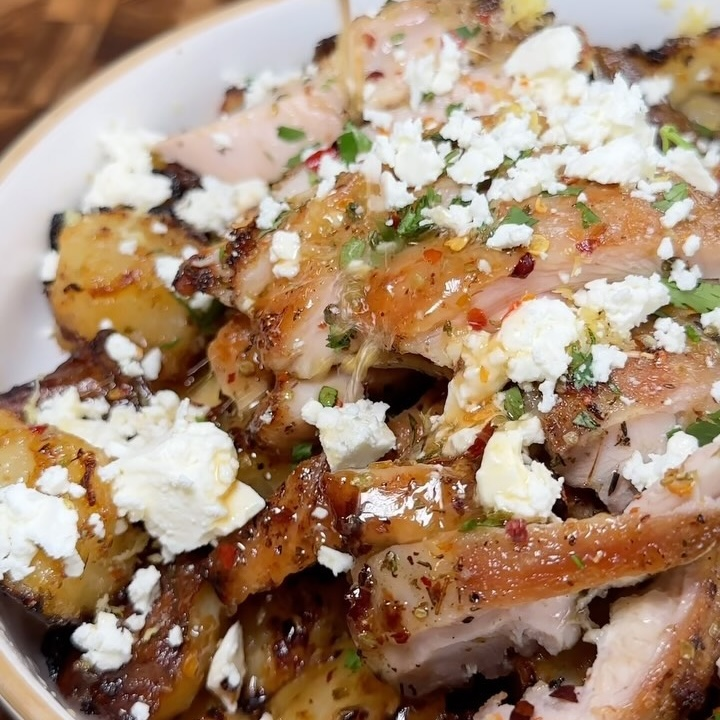

Papas Mediterráneas con Pollo
Ingredientes:
Para el Pollo:
- 1.5 lbs de muslos de pollo, sin hueso y sin piel
- Sal y pimienta al gusto
- 1/2 cucharadita de ajo en polvo
- 1/2 cucharadita de tomillo seco
- 1/2 cucharadita de orégano seco
- 2 cucharadas de aceite de oliva
Para las Papas:
- 3 papas medianas, peladas y cortadas en trozos
- Ralladura de 1 limón
- Jugo de 1 limón
- 3 cucharadas de aceite de oliva
- 1 cucharadita de orégano
- 1 cucharadita de hojuelas de chile
- 1 cucharadita de sal
- 1 cucharadita de miel
- Queso feta desmenuzado (al gusto)
Instrucciones:
- Sazona los muslos de pollo con sal, pimienta, ajo en polvo, tomillo y orégano. Rocía con aceite de
oliva, mezcla bien y deja reposar mientras preparas las papas.
- Precalienta el horno a 415°F (210°C) y la freidora de aire a 400°F (200°C)
- Hierve los trozos de papa en agua con sal hasta que estén apenas tiernas, unos 5-7 minutos. Escurre
bien
- Mezcla la ralladura de limón, el jugo de limón, el aceite de oliva, el orégano, las hojuelas de
chile, la sal y la miel
- Cocinar las Papas:
- En el Horno:
- Mezcla las papas con la mitad del aderezo y extiende en una bandeja para hornear. Asa durante 20
minutos, revuelve, agrega más aderezo y continúa asando hasta que estén doradas y crujientes, unos
20 minutos más
- En la Freidora de Aire:
- Mezcla las papas con la mitad del aderezo. Coloca en la canasta de la freidora de aire en una sola
capa. Cocina durante 15 minutos, agita, rocía con más aderezo y cocina otros 10 minutos hasta que
estén crujientes
- Cocina el pollo marinado en una sartén a fuego medio-alto hasta que esté dorado y completamente
cocido, unos 6-7 minutos por lado
- Coloca el pollo y las papas crujientes en los platos. Rocía con el aderezo y espolvorea con queso
feta